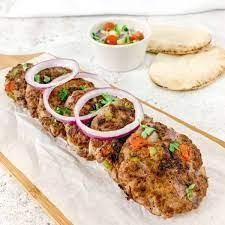

Jardim das Especiarias
Bem-vindo ao nosso restaurante, onde cada prato conta uma história de sabores ricos e autênticos do Paquistão. Explore nosso cardápio repleto de especiarias e pratos tradicionais.
Cardápio - Jardim das Especiarias

Chapli Kabab
Hambúrguer de carne moída com especiarias picantes, ervas e cebolas, grelhado e servido com pão e salada.
R$ 40,00
Frango Tikka
Pedaços de frango marinados em iogurte e especiarias, assados até ficarem macios e aromáticos.
R$ 40,00Biryani
Prato de arroz aromático e condimentado, geralmente preparado com carne (como frango, carneiro ou carne de boi), ervas, especiarias e pedaços de batata.
R$ 50,00
Seekh Kabab
Deliciosos espetinhos de carne moída temperada com especiarias e ervas, grelhados até ficarem suculentos e saborosos.
R$ 35,00